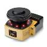
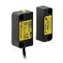

Building Automation
Industrial Automation
Power Automation & Safety


Bangladesh Distributor
Question
What is the processing for the conduit section, and what are the recommended connectors for D4B-[]N Safety Limit Switch?
Answer
1. OMRON Applicable Connectors and Dimensions
Metal Connectors
| Conduit | Applicable cable | Inner diameter (D) of seal rubber | External diameter of cable | Model | |
| Min. | Max. | ||||
| JIS B 0202 G1/2 | Cabtire cable (general-purpose) | 7 dia. mm | 5.5 dia. mm | 7.5 dia. mm | SC-1M |
| 9 dia. mm | 7.5 dia. mm | 9.5 dia. mm | SC-2M | ||
| 12.5 dia. mm | 11 dia. mm | 13 dia. mm | SC-3M | ||
| 14 dia. mm | 12 dia. mm | 14 dia. mm | SC-4M | ||
| 11 dia. mm | 9 dia. mm | 11 dia. mm | SC-5M | ||
| Cabtire cable (anticorrosive) | 7 dia. mm | 5.5 dia. mm | 7.5 dia. mm | SC-21 | |
| 9 dia. mm | 7.5 dia. mm | 9.5 dia. mm | SC-22 | ||
| 12.5 dia. mm | 11 dia. mm | 13 dia. mm | SC-23 | ||
| 14 dia. mm | 12 dia. mm | 14 dia. mm | SC-24 | ||
| 11 dia. mm | 9 dia. mm | 11 dia. mm | SC-25 | ||
Metal Models with O-ring
G1/2
SC-1M to 5M
Metal Models without O-ring
G1/2
SC-21 to 25
Resin Connectors
| Conduit | Applicable cable | Inner diameter (D) of seal rubber | External diameter of cable | Model | |
| Min. | Max. | ||||
| JIS B 0202 G1/2 | Cabtire cable | 10.6 dia. mm | 8.5 dia. mm | 10.5 dia. mm | SC-P2 |
| Pg13.5 | 9.6 dia. mm | 7.5 dia. mm | 9.5 dia. mm | SC-P3 | |
| JIS B 0202 G1/2 | 9 dia. mm | 7.5 dia. mm | 9 dia. mm | SC-6 | |
Resin Models
G1/2
SC-P2
Resin Models
Pg13.5
SC-P3
Resin Models
G1/2
SC-6
2. Tighten the connectors to a torque of 1.77 to 2.16 Nm. (For conduits, use a tightening torque of 0.78 to 0.88 Nm.)
The case may be damaged if the connectors are tightened excessively.
3. If using a 1/2-14NPT conduit, apply sealing tape to the connector conduit opening to conform to IP67.
4. For 3-conduit connections, use the enclosed cap screws on the unused conduit openings and tighten to a torque of 1.27 to 1.67 Nm.
Recommended Products
 F3SR-B
F3SR-B
For Safety Light Curtain Robust & Basic New Lineup. Understanding the Indicators at a Glance.
OS32C
Compact (104.5 mm), lightweight (1.3 kg) and easy-to-install Safety Laser Scanner
D40Z
Supports ISO 13849-1 (PLe/Safety Category 4). Can be used on higher risk level applications by connecting to Safety Controllers.